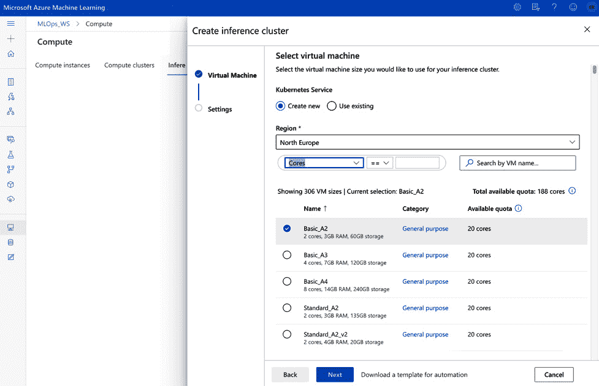
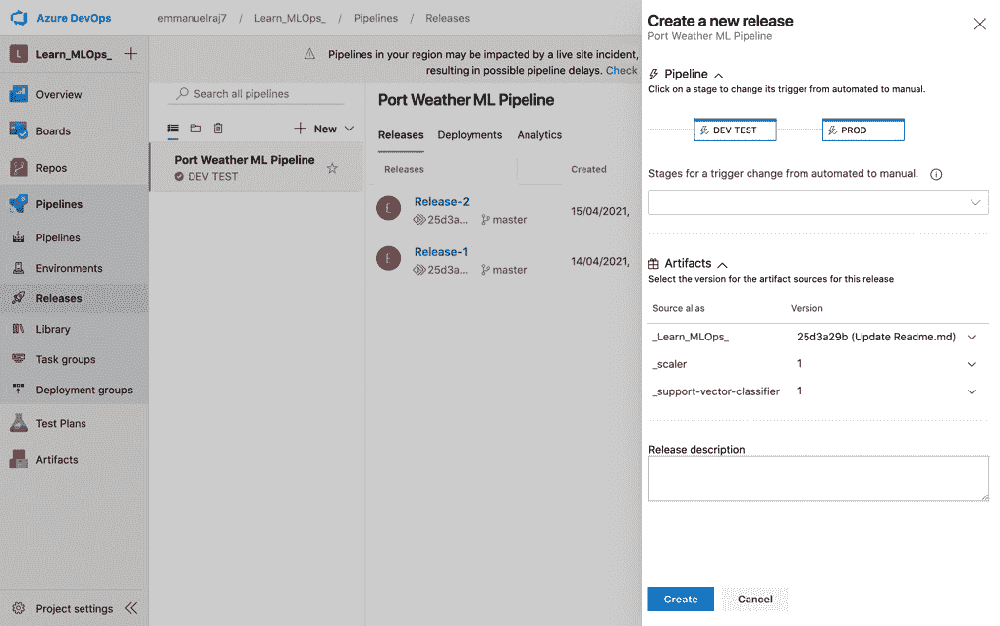
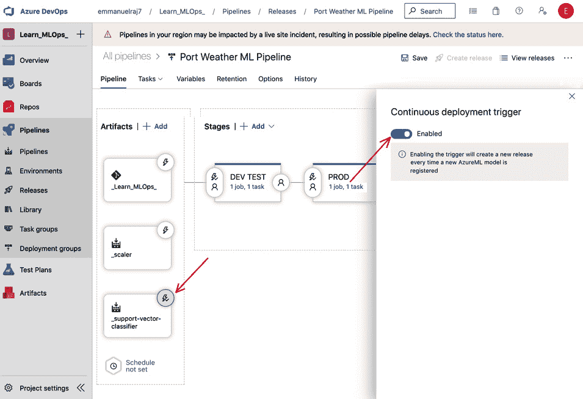
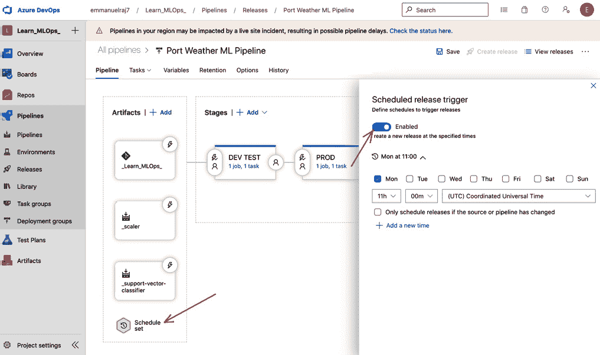

第十章:生产发布要点
在本章中，您将了解持续集成和持续交付 ( CI/CD )管道、生产环境的要素，以及如何设置生产环境，以便为最终用户提供您之前测试和批准的机器学习 ( ML )模型。我们将为 CI/CD 管道的生产环境设置所需的基础架构，为生产部署配置流程，为完全自动化配置管道执行触发器，并了解如何管理生产版本。本章将涵盖 CI/CD 管道和生产环境的基本原理，因为管道是产品，而不是模型。
通过学习 CI/CD 管道的基础知识，您将能够为您的用例或业务开发、测试和配置自动化 CI/CD 管道。我们将讨论一系列关于生产部署的主题，然后深入研究在生产中监控 ML 模型的初级读本。
- 设置生产基础设施
- 在 CI/CD 管道中设置我们的生产环境
- 测试我们的生产就绪管道
- 为自动化配置管道触发器
- 管道发布管理
- 持续监控服务
让我们从建立构建 CI/CD 管道所需的基础设施开始。
建立生产基础设施
在本节中，我们将建立所需的基础设施，为我们的业务用例服务(预测天气状况——图尔库港是否下雨，以规划和优化港口资源)。我们将建立一个自动伸缩的 Kubernetes 集群，以 web 服务的形式部署我们的 ML 模型。Kubernetes 是一个开源的容器编排系统，用于自动化软件应用程序的部署、扩展和管理。许多云服务提供商提供基于 Kubernetes 的基础设施即服务。类似地，微软 Azure 提供了一个基于 Kubernetes 的基础设施作为服务，称为Azure Kubernetes Service(AKS)。我们将使用 AKS 来协调我们的基础设施。
有多种方法可以在 Azure 上提供自动扩展的 Kubernetes 集群。我们将通过以下两种方式来了解基础架构配置的不同视角:
- Azure 机器学习工作区门户
- Azure SDK
让我们先看看最简单的方法；也就是说，使用 Azure 机器学习工作区为生产提供 Azure Kubernetes 集群。
Azure 机器学习工作区
在本节中，我们将使用 Azure 机器学习工作区提供一个 Azure Kubernetes 集群。执行以下步骤:
- Go to the Azure Machine Learning workspace and then go to the Compute section, which presents options for creating different types of computes. Select Inference clusters and click Create, as shown in the following screenshot:

图 10.1–供应推理集群
- Clicking the Create button will present various compute options you can use to create a Kubernetes service. You will be prompted to select a Region, which is where your compute will be provisioned, and some configuration so that you can provision in terms of cores, RAM, and storage. Select a suitable option (it is recommended that you select Standard_D2_v4 as a cost-optimal choice for this experiment), as shown in the following screenshot:
图 10.2–选择合适的计算选项
- After selecting a suitable compute option, you will be prompted to
'prod-aks'- meaning production Azure Kubernetes Service), set Cluster purpose to Production (as we are setting up for production), choose Number of nodes for the cluster, and select the Basic option for Network configuration. Omit Enable SSL configuration for simplicity. However, it is recommended to enable SSL connections for more security in production, as per your needs:
图 10.3 -配置设置
- Click the Create button to provision the Kubernetes cluster for production. It will take around 15 minutes to create and provision the compute for production use:

图 10.4–调配的 Kubernetes 集群
- 一旦配置了 AKS 集群，您将看到一个正在运行的 Kubernetes 集群，其名称为您为计算提供的(例如，
prod-aks)，如前面的屏幕截图所示。
Azure 机器学习 SDK
在 Azure 上创建和提供 Kubernetes 集群的另一种方法是使用 Azure 机器学习 SDK。你可以使用一个名为create_aks_cluster.py的预制脚本，它可以在10_Production_Release文件夹中找到。运行create_aks_cluster.py脚本的先决条件是你的 Azure 机器学习工作区的config.json(可以从 Azure 机器学习工作区下载)文件，如下图所示:

图 10.5–从 Azure 机器学习工作区获取配置文件
进入你的 Azure 机器学习工作区，点击config.json文件进入create_aks_cluster.py文件所在的同一个目录(10_Production_Release)，如下所示:
├──10_Production_Release ├── create_aks_cluster.py ├── config.json
这样，您现在就可以运行脚本(create_aks_cluster.py)来为生产部署创建 AKS 计算。我们来看看create_aks_cluster.py的脚本:
- 从
azureml.coreSDK 或库中导入必要的函数。诸如Workspace、Model、ComputeTarget、AksCompute等功能将用于供应您的 AKS 集群:from azureml.core import Workspace from azureml.core.model import Model from azureml.core.compute import ComputeTarget from azureml.core.compute_target import ComputeTargetException from azureml.core.compute import AksCompute, ComputeTarget
- 通过导入必需的函数，您可以通过连接到 Azure 机器学习工作区并创建
ws对象来开始使用它们。通过使用Workspace函数并将其指向您的config.json文件来完成，就像这样:ws = Workspace.from_config() print(ws.name, ws.resource_group, ws.location, sep = '\n')
- 默认情况下，
from_config()函数在执行create_aks.py文件的同一个目录中查找config.json文件。如果您的config.json文件在其他位置，那么在from_config()函数中指向该文件的位置。成功执行workspace.from_config()功能后，您将看到工作区的名称、资源组和位置被打印出来。 - 接下来，我们将为生产部署创建一个 AKS Kubernetes 集群。首先为您的 AKS 集群选择一个名称(参考
aks_name变量)，比如prod-aks。该脚本将检查具有所选名称的集群是否已经存在。我们可以使用try语句通过使用ComputeTarget()函数来检查具有所选名称的 AKS 目标是否存在。它将workspace对象和aks_name作为参数。如果找到具有所选名称的集群，它将打印找到的集群并停止执行。否则，将使用ComputeTarget.create()函数创建一个新集群，该函数采用默认配置# Choose a name for your AKS cluster aks_name = 'prod-aks' # Verify that cluster does not exist already try: aks_target = ComputeTarget(workspace=ws, name=aks_name) print('Found existing cluster, use it.') except ComputeTargetException: # Use the default configuration (can also provide parameters to customize) prov_config = AksCompute.provisioning_configuration() # Create the cluster aks_target = ComputeTarget.create(workspace = ws, name = aks_name, provisioning_configuration = prov_config) if aks_target.get_status() != "Succeeded": aks_target.wait_for_completion(show_output=True)的provisioning配置
在成功执行前面的代码之后，将会创建一个具有所选名称(即prod-aks)的新集群。通常，创建一个新的集群需要大约 15 分钟。一旦集群被创建，它就可以在 Azure 机器学习工作区中被发现，正如我们在图 10.4 中看到的。现在，我们已经为我们的生产环境设置了增强 CI/CD 管道的先决条件，让我们开始设置它吧！
在 CI/CD 管道中设置我们的生产环境
- 转到你之前参与的 Azure DevOps 项目，重新访问管道 | 发布部分，查看你的港口天气 ML 管道。我们将通过创建生产阶段来增强这一渠道。
- Click on the Edit button to get started and click on Add under the DEV TEST stage, as shown in the following screenshot:

图 10.6–添加新阶段
- Clicking the
productionorPRODand save it, as shown in the following screenshot:
图 10.7–添加和保存生产阶段(PROD)
- A new production stage named PROD will be created. Now, you can configure jobs and processes at the production stage. To configure jobs for PROD, click on the 1 job, 0 task link (as shown in the preceding screenshot, in the PROD stage) in the PROD stage. You will be directed to the Tasks section, which is where you can add jobs to the PROD stage. In this stage, we will deploy models from our Azure Machine Learning workspace, so we will connect to it using the AzureML Model Deploy template we used previously in Chapter 7, Building Robust CI and CD Pipelines. Click on the + sign on the right-hand side of the Agent job section to add a task, as shown here:

图 10.8–添加 AzureML 模型部署任务
- 搜索
mlops_ws并指向模型工件作为您的模型源。我们这样做是因为我们将使用我们在第 4 章 、机器学习管道中培训的模型工件。 - 接下来，从 Azure DevOps 存储库中指向您的推理配置文件，如下面的屏幕截图所示。推理配置文件表示用于部署的自定义环境的配置设置。我们将使用与用于
inferenceConfig.yml文件相同的推理Config.yml文件。 - 接下来，我们将配置
prod-aks，命名您的部署或 web 服务(例如prod-webservice，并从连接到管道的 Azure DevOps 存储库中选择部署配置文件，如下所示:
AksDeploymentConfig.yml computeType: AKS autoScaler: autoscaleEnabled: True minReplicas: 1 maxReplicas: 3 refreshPeriodInSeconds: 10 targetUtilization: 70 authEnabled: True containerResourceRequirements: cpu: 1 memoryInGB: 1 appInsightsEnabled: False scoringTimeoutMs: 1000 maxConcurrentRequestsPerContainer: 2 maxQueueWaitMs: 1000 sslEnabled: False
- 选择中的
AksDeploymentConfig.yml文件作为我们的部署配置文件。现在，点击保存按钮来设置 PROD 环境。
至此，您已经成功地设置了生产环境，并将其与您的 CI/CD 管道进行了自动化集成。现在，让我们通过执行来测试管道。
测试我们的生产就绪型管道
祝贺建立生产管道！接下来，我们将测试它的健壮性。一个很好的方法是创建一个新的发布，并观察和研究生产管道是否成功地将模型部署到生产中(在包含管道的生产 Kubernetes 集群设置中)。按照以下步骤测试管道:
- First, create a new release, go to the Pipelines | Releases section, select your previously created pipeline (for example, Port Weather ML Pipeline), and click on the Create Release button at the top right-hand side of the screen to initiate a new release, as shown here:
图 10.11–创建新版本
- Select the artifacts you would like to deploy in the pipeline (for example,
Learn_MLOps repo,_scaler, andsupport-vector-classifiermodel and select their versions. Version 1 is recommended for testing PROD deployments for the first time), and click on the Create button at the top right-hand side of the screen, as shown in the preceding screenshot. Once you've done this, a new release is initiated, as shown in the following screenshot:
图 10.12-新版本的执行
- 执行管道后，将部署开发测试和生产阶段(例如发布-5 ，如前面的截图所示)。在管道发布过程中，您可以通过监控任何阶段(开发测试或生产)的每个步骤的日志来检查每个阶段中的每个步骤，直到管道成功部署。您还可以检查以前版本的日志。
- 在成功开发一个版本后，将使用 CI 和 CD 部署开发测试和产品阶段。您必须确保管道是健壮的。接下来，我们可以通过添加自定义触发器来进一步自定义管道，这些触发器将在没有任何人工监督的情况下自动执行管道。在没有任何人工监督的情况下自动化 CI/CD 管道可能有风险，但可能有优势，例如实时连续学习(监控和再培训模型)和更快的部署。知道如何在没有任何人工监督的情况下自动化 CI/CD 管道是很好的。请注意，在许多情况下不建议这样做，因为有很大的误差空间。在某些情况下，它可能是有用的——这实际上取决于您的用例以及 ML 系统目标。现在，让我们看看全自动化的触发因素。
为自动化配置管道触发器
在本节中，我们将基于我们已经连接到管道的工件配置三个触发器。我们将设置的触发器如下:
- Git 触发器:用于修改主分支的代码。
- 人工触发:当一个新的模型或人工制品被创建或训练时。
- 日程触发:每周周期性触发。
让我们详细看一下这些管道触发器。
设置 Git 触发器
在团队中，当对存储库中的某个分支进行代码更改时，通常会设置一个部署触发器。例如，当对主分支或开发分支进行代码更改时，CI/CD 管道被触发，以分别将应用程序部署到生产或开发测试环境。当在主或开发分支中提出合并代码的拉请求时，QA 专家或产品经理接受拉请求，以便与各自的分支合并。在对主分支或开发分支进行代码更改时，会生成一个触发器来在管道中创建一个新的版本。按照以下步骤为实验的主分支创建一个触发器，如下面的屏幕截图所示:
- Go to the Pipelines | Releases section and select your pipeline (for example, Port Weather ML pipeline). Then, click Edit:

图 10.13–设置连续部署触发器(git 触发器)
您将被定向到一个门户，在这里您可以编辑您的管道(例如， Port Weather ML pipeline )，以便您可以为您的工件配置连续部署触发器。
- 要为主分支设置 Git 触发器(当对主分支进行更改时，会触发新的版本)，请单击触发器图标(雷电图标)并将开/关开关按钮从禁用移动到启用。这将启用持续部署触发器。
- 最后，添加一个分支过滤器，指向您想要为其设置触发器的分支——在本例中是主分支——如前面的屏幕截图所示。保存您的更改以设置 Git 触发器。
通过实现这些步骤，您已经设置了一个连续部署触发器，以便在对主分支进行更改时启动新的发布。
设置人工触发器
对于 ML 应用程序，Artifactory 触发器非常有用。当团队中的数据科学家已经训练了新的模型或工件(文件)时，将这些模型部署到测试环境中是有用的，如果它们比以前的模型或触发器有希望或更好，那么最终将它们投入生产。按照以下步骤设置一个连续部署触发器，该触发器将在新模型被训练时为管道创建一个新的发布，如下面的屏幕截图所示:
- Go to the Pipelines | Releases section and select your pipeline (for example, Port Weather ML pipeline). Then, click Edit:
图 10.14–为工件触发器设置 CD(SVC 模型)
点击 Edit 按钮，您将被引导至一个门户网站，在这里您可以编辑您的管道，如前面的屏幕截图所示。
- 要为您的模型设置工件触发器，点击您选择的模型的，例如支持向量分类器 ( SVC )，并启用连续部署触发器。在前面的屏幕截图中，已经为模型(SVC)启用了一个触发器。每当一个新的 SVC 模型被训练并注册到连接到你的 Azure 机器学习工作空间的模型注册中心时，一个新的发布将被触发以通过管道部署新的模型。
- 最后，保存您的更改，为 SVC 模型设置一个工件触发器。当一个新的 SVC 模型在你的 Azure 机器学习工作空间中被训练和注册时，你有一个连续的部署触发器来启动一个新的发布。管道将获取新模型，并将其部署到开发测试和生产环境中。
通过实现这些步骤，当在 Azure 机器学习工作空间中创建或注册了一个新的工件时，您就有了一个持续部署触发器来启动新的管道发布。
设置时间表触发器
现在，我们将为管道设置一个特定时间的调度触发器。这种触发器有助于保持系统的健康，并通过定期的新版本进行更新。计划触发器以设定的时间间隔创建新版本。我们将为每周一上午 11:00 设置一个计划触发器。此时，将触发一个新版本，以将 SVC 模型的最新版本部署到开发测试和生产环境中。按照以下步骤设置计划触发器:
- Go to the Pipelines | Releases section and select your pipeline (for example, Port Weather ML pipeline). Then, click Edit, as shown in the following screenshot:
图 10.15–设置计划触发器
点击编辑按钮，您将被引导至一个门户网站，在此您可以编辑您的管道。
- 要设置管道的定时触发，点击定时设置并启用定时释放触发。然后，选择您想要触发释放的时间。以为例，在前面的屏幕截图中，每周星期一上午 11:00 启用了一个触发器。
- 最后，保存您的更改，为管道设置一个设置调度触发器触发器。
通过实现这些步骤，您拥有了一个连续部署触发器，可以在设定的时间间隔启动新的管道发布。
祝贺您设置了 Git、工件和调度触发器。这些触发器实现了管道的完全自动化。管道已经建立，现在可以成功地测试和部署模型了。你也可以选择通过增加一个人或质量保证 ( QA )专家来批准流水线中的每个阶段，从而实现流水线的半自动化。例如，在测试阶段之后，QA 专家可以做出批准，这样，如果测试阶段一切顺利，您就可以开始生产部署。作为 QA 专家，监控您的 CI/CD 渠道至关重要。在下一节中，我们将看看管理管道发布的一些最佳实践。
管道发布管理
CI/CD 管道中的版本允许您的团队以更快的速度和更低的风险向您的客户完全自动化地连续交付软件。版本允许您在生产的多个阶段测试和交付您的软件，或者设置带有批准和按需部署的半自动流程。监控和管理这些释放是至关重要的。我们可以通过从Pipelines|Releases访问管道，并选择我们的 CI/CD 管道(例如 Port Weather ML Pipeline )来管理发布，如下图所示:

图 10.16–管道发布管理
在这里，您可以跟踪所有的发布及其历史，并对每个发布执行操作，比如重新部署、放弃、检查日志等等。您可以在下面的屏幕截图中看到这些版本。通过点击单个的发布版本(例如， Release 4 ，我们可以检查在发布版本中部署了哪些模型和工件，以及发布版本是如何被触发的(手动或者使用自动触发器)。它提供了管道的端到端可追溯性。这些信息对于 ML 系统的治理和合规性至关重要:
图 10.17-检查发布
预防胜于治疗。正如我们在失败后进行事件审查一样，在部署新的服务或模型后进行发布后审查有助于防止可能的失败。部署后对版本的全面分析可以帮助我们理解关键问题的答案，例如:
- 在一个版本中，什么有效，什么无效？
- 发布过程中有什么障碍吗？
- 有没有什么不清楚的过程你可以解决，并在下一个版本中解释得更清楚？
在发布后彻底理解这些问题可以帮助您改进和迭代您的策略，并开发更好的发布管理实践。
走向持续监控
至此，我们已经建立了一个完全自动化且稳健的管道。到目前为止，我们已经成功地在 MLOps 工作流中实现了部署部分或模块(正如我们在第 1 章 、ml ops 工作流的基础中所讨论的)。实时监控部署的 ML 模型和服务以了解系统的性能是至关重要的，因为这有助于最大化其业务影响。ML 项目未能给企业带来价值的原因之一是因为在他们的决策中缺乏信任和透明度。如今，在人工智能系统中建立信任至关重要，尤其是如果我们希望适应不断变化的环境、监管框架和动态的客户需求。持续监控将使我们能够监控 ML 系统的性能，并建立对 AIs 的信任，以最大化我们的业务价值。在下一章中，我们将了解 MLOps 工作流程中的监控模块，以及它如何促进持续监控。
摘要
在本章中，我们讲述了 CI/CD 管道和生产环境的基本原理。我们做了一些实际操作来设置生产基础设施，然后在生产部署管道的生产环境中设置流程。我们测试了生产就绪管道，以测试其健壮性。为了更上一层楼，我们使用各种触发器完全自动化了 CI/CD 管道。最后，我们看了发布管理实践和能力，并讨论了持续监控 ML 系统的需要。一个关键要点是管道是产品，而不是模型。比起建立最好的模型，更好的办法是专注于建立一个健壮高效的管道。
在下一章中，我们将探索 MLOps 工作流监控模块，并了解更多关于改变游戏规则的可解释监控框架。